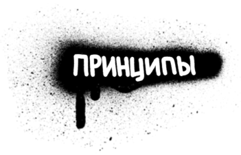
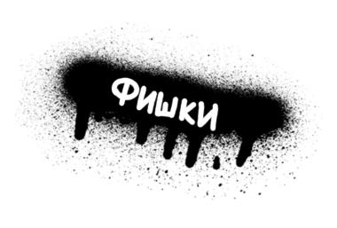
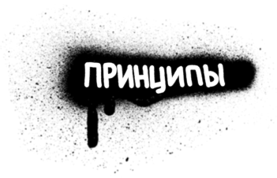
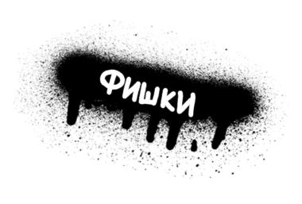

Superorganism
Это самые большие структуры, в которых организовываются все остальные. Этот раздел содержит несколько примеров комбинации и взаимодействий разных по строению компонентов.
Organism
Это компоненты, которые состоят из групп молекул, объединенных вместе, образуют относительно сложный, отдельный участок интерфейса.
Sing in
Стандартная форма входа в какое-либо приложение или сервис.
Alert
Всплывающее модальное интерактивное окно различного назначения.
Slider Comments
Распространенный вариант хранения текстовой информации на сайте или в приложении.
Select Input
Стандартный селект едничного выбора элемента списска.
Multiselect Input
Расширенный функционал Select, который продполагаем множественный выбор.
SideBarMenu
Стандрартный компонент навигации.
Molecule
Молекулы — это группы атомов, связанных друг с другом, и являются наименьшими функциональными единицами интерфейса. Как правило, молекулы берут на себя индивидуальние свойства и служат фундаментом систем проектирования.
Atom
Атомы являются основными строительными блоками интерфейсов. Атомы — это наши HTML-теги, такие как метка формы, вход или кнопка. Они также могут включать в себя более абстрактные элементы, такие как цветовые палитры и шрифты.